Practical Electronics for Embedded Systems
The electronics you need to read a schematic and build an embedded device: voltage, current and resistance, the voltage divider and its many disguises, capacitors, batteries, switches, transistors and diodes, and how a circuit becomes a tested PCB.
Circuits: the basic concepts
Schematic (or circuit diagram)
A map of the circuit, not a photo of it
A real circuit is a tangle of wires, a battery and parts. A schematic is its map: like a metro map, it ignores what things look like and where they physically sit, and shows only what is connected to what.
Every real embedded system, such as the wearable on the first slide, starts as a schematic.
- A schematic is a model of an electronic circuit.
- An electronic circuit is electronic components interconnected in a closed loop. Current needs a complete path out of the source and back into it.
- Schematics make our lives easier: they abstract components to basic concepts (a source, a resistor, an LED) and are much easier to read and understand than the physical circuit.
- Lines are ideal wires (no resistance); each symbol stands for one component. The example: a battery V, a resistor R and an LED in one loop.
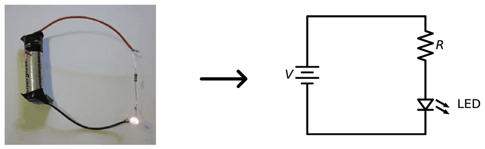
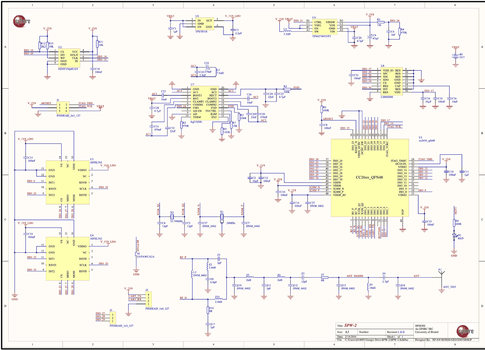
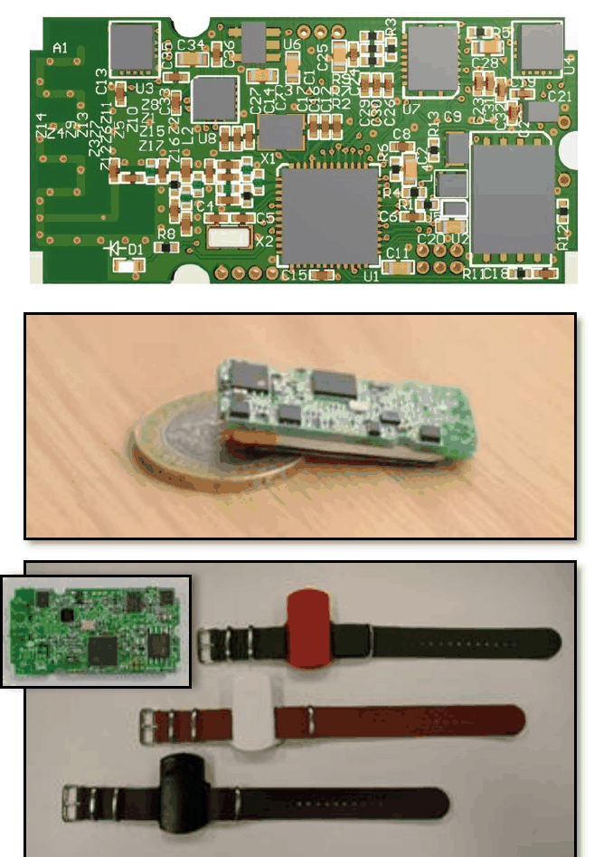
Voltage, current, resistance and Ohm's law
The three quantities everything else builds on
Think of water in pipes. Voltage is the pressure difference that pushes. Current is how much water actually flows. Resistance is how narrow the pipe is.
More pressure gives more flow; a narrower pipe gives less. That is all Ohm's law says.
- Voltage (V, volts): the electric potential difference between two points.
- Current (I, amperes): the flow of electrically charged particles.
- Resistance (R, ohms, Ω): a measure of the opposition to the flow of current.
- Ohm's law: the current through two points is directly proportional to the voltage across them:I = V / R equivalently V = I · R and R = V / I
- Voltage is always between two points (across a component); current flows through a component.
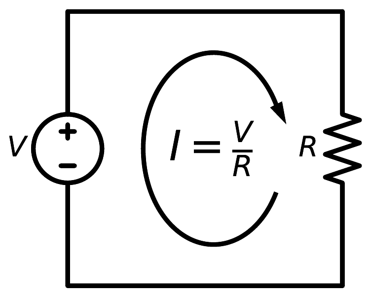
Electric power sources: AC and DC
Which way the charge flows
DC is a river: the charge always flows the same way. A battery gives DC. AC is a tide: the flow reverses direction many times per second. The wall socket gives AC.
Electronics want the river. So anything plugged into the wall first converts AC to DC.
- Direct current (DC) is a one-directional flow of electric charge (e.g. a battery).
- Alternating current (AC) periodically reverses direction (e.g. the mains, at 50 or 60 Hz).
- A rectifier is an electrical device that converts AC to DC. It is built from diodes, the one-way conductors covered in Part 2.
- Embedded systems typically require DC power sources.
Voltage sources, ground and labels
Where voltages are measured from
Height only makes sense relative to something, usually sea level. Voltage is the same: it is a difference between two points. So we pick one point, call it ground (0 V), and measure everything else from there.
On big schematics, drawing every wire to the battery would be a mess. Instead we write a label: every point with the same name is connected.
- DC sources can be batteries (or the mains via rectification).
- Voltage is the potential difference between two points, yet it is convenient to measure it from a common reference point: the ground.
- The ground is sometimes physically connected to the earth, but it does not have to be.
- As circuits grow, we use labels for the supply voltage and the ground. A label implies that all points with the same label are connected to each other.
- The slide redraws the battery loop this way: the battery sits between Vsource and ground, and so does the resistor plus LED. Same circuit, no loop drawn.
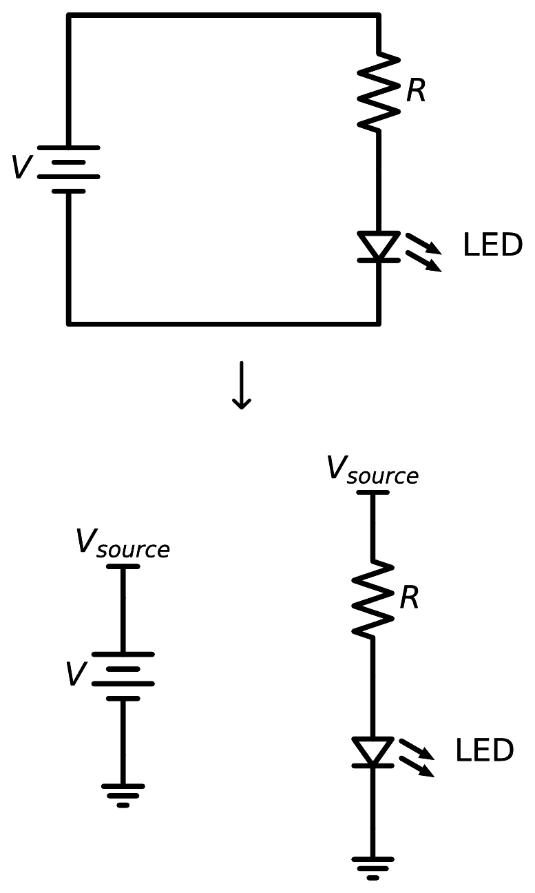
Electric load, power and energy
What consumes, how fast, and how much in total
The load is whatever uses up the electricity: a lamp, a motor, a chip. Power is how fast it uses energy, like litres per minute from a tap. Energy is the total amount used, like the litres in the bucket after some time.
A battery holds a fixed amount of energy, so lower power means longer life.
- The electric load is the components or part of the circuit that consume electrical energy, converting it to light, kinetic energy or heat.
- Electric power (P, watts) is the rate of energy transfer (consumption):P = V · I
- Energy (E, joules) consumed is proportional to the time t of operation:E = P · t = V · I · t
- Combining with Ohm's law gives two handy forms for a resistor: P = I² · R = V² / R.
- Battery capacity is usually given in mAh. Running time ≈ capacity / average current.
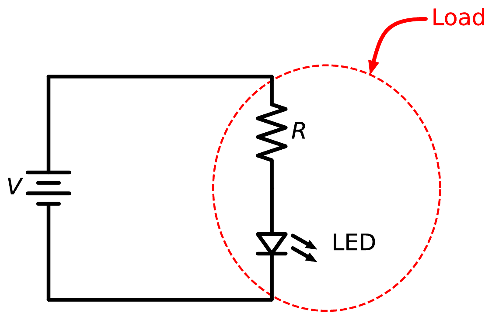
Everything has resistance
Wires, air and everything in between
Nothing is a perfect conductor and nothing is a perfect insulator. A copper wire resists a tiny bit; air resists enormously. We usually round those to "zero" and "infinity" because it makes thinking easier, and it is almost always close enough.
- Resistance is opposition to current flow. Fixed resistors range from 0 Ω to hundreds of GΩ.
- Insulators are assumed to have infinite resistance. In reality an insulator like air has a very high resistance (the slide's open switch: 1014 Ω).
- Conducting wires are assumed to have zero resistance. In reality a copper wire has a very low resistance (the slide's example: 0.002 Ω).
- The idealisation fails only at the extremes: large currents through thin wires (the wire drops voltage and heats up), or very high voltages across small gaps.
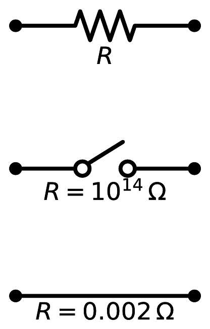
"Path of least resistance"
Resistors side by side, and the slide's quiz
Give water two pipes side by side, one wide and one hair-thin. Nearly all the water goes through the wide one. The thin pipe does carry a trickle, but so little that you can ignore it.
Current behaves the same way: it splits between parallel paths, and most of it takes the easiest one.
- The slide's quiz: a 1 kΩ resistor alone, versus 1 kΩ in parallel with 1 MΩ, at the same voltage. Which draws more current, and by how much?
- Apply 1 V. Left: I = V / R = 1 / 1k = 1 mA.
- Right: two resistors in parallel combine asR = (R1 · R2) / (R1 + R2) (1k · 1M) / (1k + 1M) ≈ 999 Ωso I = 1 / 999 = 1.001 mA: just 0.1% more.
- Practically, left and right are equivalent. A parallel path that is much more resistive can be ignored.
- For completeness: resistors in series simply add, R = R1 + R2, and there the larger one dominates.
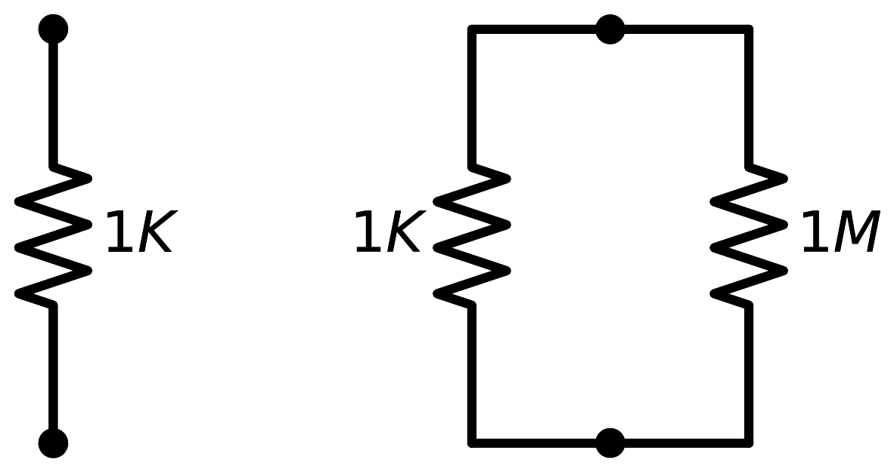
Short circuit (or short)
A path of "no resistance"
A short circuit is an accidental shortcut: a path straight from the supply to ground with nothing in between to slow the current down. Like a dam breaking, everything rushes through at once.
- A short is an often-unintentional path of "no resistance" from a high voltage to ground.
- Mathematically it is an impossibility:I = V / R = V / 0 = ∞
- Practically, any wire or conductive path has some very small resistance, and if the supply is a battery, it has internal resistance too.
- So a short leads to a very high current, often limited only by how much the power supply can provide.
- In high-power electronics this can be dangerous or lethal; in low-power electronics it can damage components or chips.
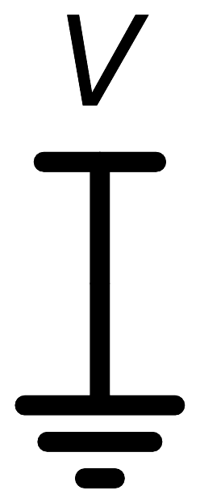
Resistance can be variable
One idea behind many components
A surprising number of components are just resistors whose value changes with something: a knob, the temperature, the light, the frequency of the signal, or another voltage. Learn what the "something" is and you know what the component is for.
- Potentiometer: mechanically controlled resistance.
- Thermistor: temperature-dependent resistance.
- Photoresistor: luminosity-dependent resistance.
- Capacitor / inductor: behave like frequency-dependent resistors for AC. This is called reactance.
- Transistor: electrically controlled resistance.
- Each of these returns in Part 2, usually inside a voltage divider.
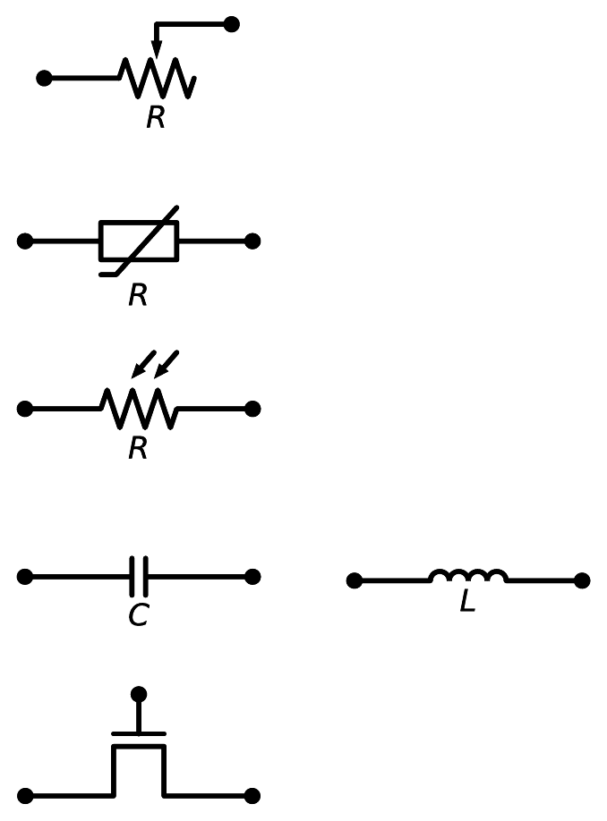
Building blocks of embedded circuits
Voltage divider
The most reused circuit in this lecture
Two resistors in a row share the input voltage between them, in proportion to their size, like two people carrying a load where the bigger one takes more. Tap the point between them and you get a fixed fraction of the input.
- A voltage divider is a signal attenuator: the output voltage is a fraction of the input voltage.Vout = Vin · R2 / (R1 + R2)
- If R1 is much smaller than R2, most of the input signal goes through (small attenuation).
- If R1 is much larger than R2, most of the input signal does not go through (large attenuation).
- Where it comes from: the same current I = Vin / (R1 + R2) flows through both, and Vout = I · R2.
- The formula assumes that whatever is connected to Vout draws almost no current (true for an ADC or logic input).
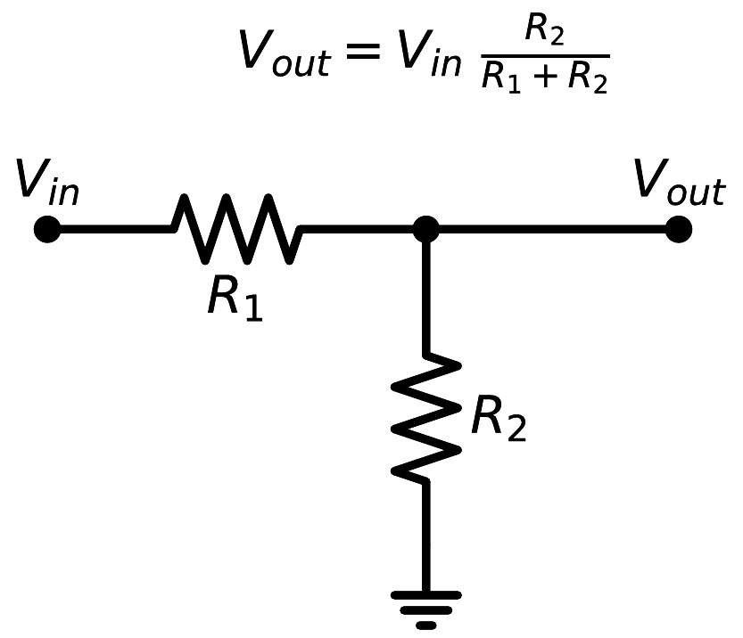
Level shifter
Making a 5 V device talk to a 3.3 V device
One chip shouts (5 V means '1'), the other has sensitive ears (3.3 V at most). A voltage divider between them turns the volume down to a level the listener can take.
- Goal: interface the output of a device that encodes '1' as 5 V to a device that expects at most 3.3 V, without damaging the latter.
- The slide uses 1 kΩ in series and 2 kΩ to ground:5 V · 2k / (1k + 2k) = 3.33 V
- A '0' (0 V) stays 0 V, so both logic levels arrive correctly.
- This only works in one direction (5 V to 3.3 V). Going the other way needs a different circuit, since a divider cannot raise a voltage.
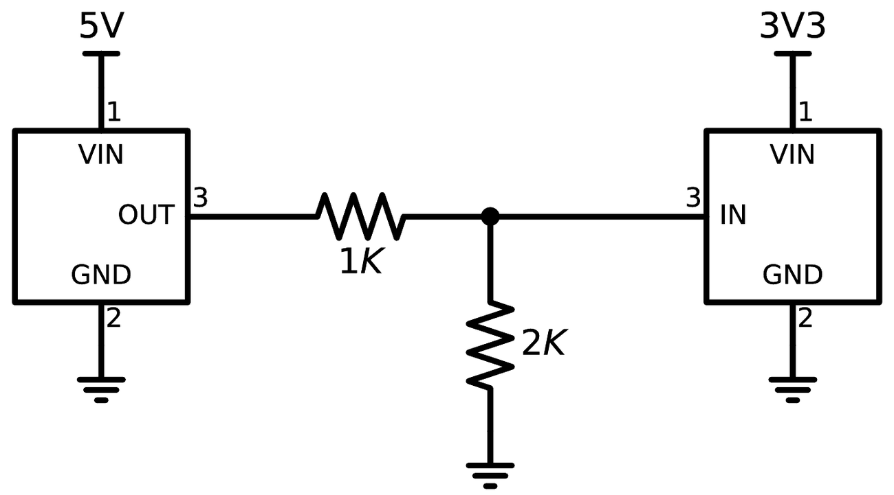
Volume control: the potentiometer
A voltage divider with a knob
A potentiometer is one long resistor with a sliding contact. Slide the contact and you change where the resistor is "cut" in two. It is a voltage divider whose ratio you set with your fingers.
- Mechanically controlled signal attenuation.
- A potentiometer has two terminals at the two ends of a resistor and one at the wiper arm.
- The wiper can be moved, cutting the resistor into two parts with an adjustable ratio. R1 + R2 stays constant; only the split changes.
- The same configuration is used for user input: an Analog-to-Digital Converter (ADC) measures the output voltage and maps it to a set of numbers.
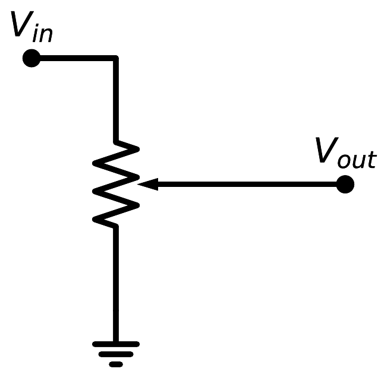
Temperature sensor: thermistor in a divider
Turning a resistance into something measurable
A microcontroller cannot measure resistance directly. It can measure voltage. So we put the temperature-dependent resistor into a voltage divider: when the temperature changes, the resistance changes, the divider ratio changes, and so the voltage changes.
- Embedded systems can measure voltage, not resistance.
- A thermistor's resistance (R2) depends on the temperature T.
- The output voltage depends on the ratio of the two resistors, therefore the output voltage depends on the temperature:Vout = VS · R2(T) / (R1 + R2(T))
- The datasheet curve shows R / R25 (resistance relative to its value at 25 °C) on a logarithmic axis, for three B constants. It falls with temperature: a negative temperature coefficient (NTC).
- The same trick works for a photoresistor (a light sensor) or any other resistive sensor.
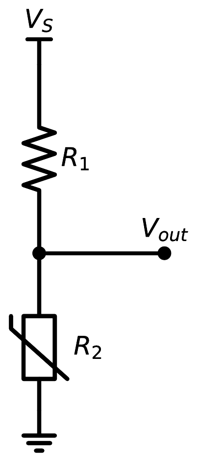
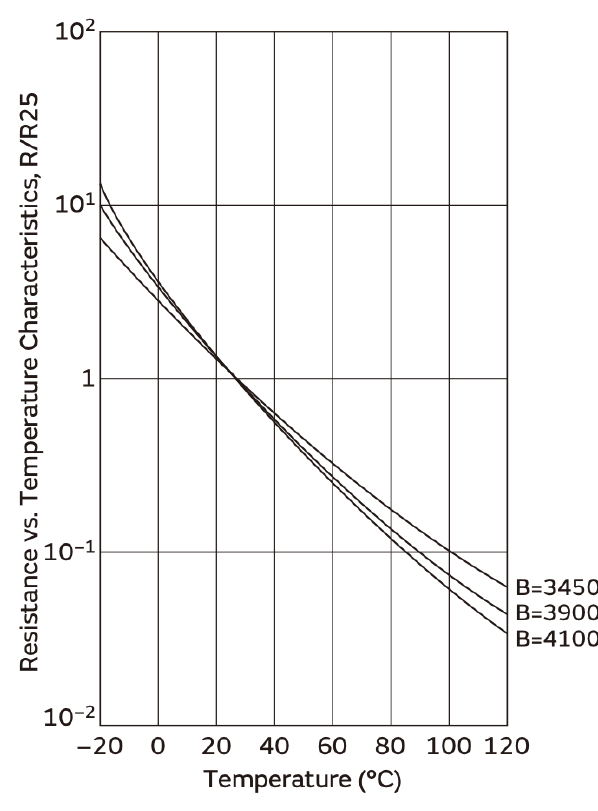
Capacitors and the RC low-pass filter
Tiny energy stores that react to frequency
A capacitor is a small bucket for charge. It fills up, holds energy, and can give it back. Once full, nothing more flows, so steady (DC) current cannot get through.
But if you keep sloshing the level up and down (AC), charge keeps moving in and out. The faster you slosh, the easier it goes.
- Capacitors can store and provide electrical energy. They behave like tiny "power supplies".
- Capacitors do not let DC current go through; they do let AC current go through.
- They behave like frequency-dependent "resistors": high frequencies see a low "resistance", low frequencies see a high one.XC = 1 / (2π f C)
- RC low-pass filter: a voltage divider with the capacitor as the lower element. High frequencies are attenuated a lot, low frequencies only a bit. The boundary is the cutoff frequencyfc = 1 / (2π R C) there Vout ≈ 0.71 · Vin
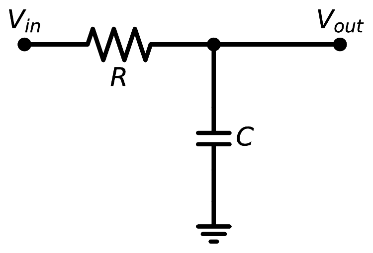
Batteries are imperfect power sources
The hidden resistor inside every battery
A battery behaves like a perfect source with a small resistor hidden inside. Sip slowly and you get the full voltage. Gulp, and part of the voltage gets stuck in that hidden resistor, so less reaches your circuit.
The older the battery, the bigger the hidden resistor.
- Batteries have internal resistance (RI), which increases as they are used.
- It creates a voltage drop proportional to the current the system draws, so the supply voltage is less than the battery voltage:VS = V - I · RI
- As the system goes through its states of operation it may need a high current for a short time (radio transmission, a motor starting). Low current: small drop, no problem. High current: large drop, dangerous.
- Large voltage drops can take the supply below the minimum operating voltage of the embedded system, causing resets (a brown-out).
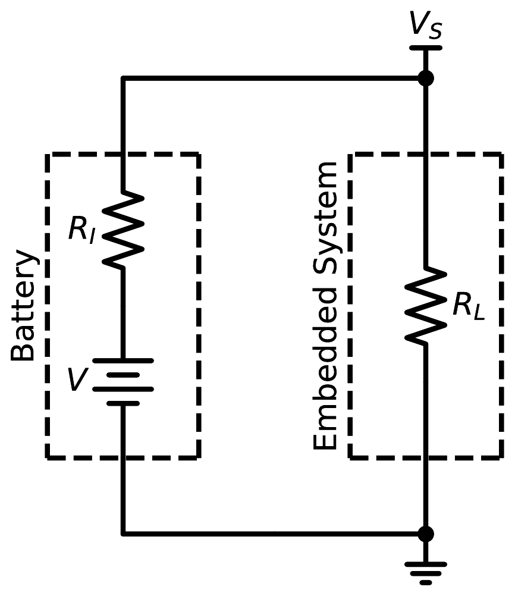
Decoupling capacitors
A local energy reservoir next to every chip
Think of the water tank on the roof of a building. When everyone showers at once, the tank covers the peak so the pressure does not collapse, and it refills slowly afterwards.
A decoupling capacitor is that tank, placed right next to a chip.
- Capacitors in parallel with the supply and physically very close to components and integrated circuits.
- They act as a local power supply or local energy reservoir.
- They filter out high-frequency noise in power supply signals.
- They support the battery in moments that require high peaks of current for a short time.
- They oppose changes to the supply voltage: if the voltage goes up, they absorb the excess energy; if it drops, they provide power to the IC.
- The slide shows a larger capacitor near the battery plus one small capacitor directly at each IC.
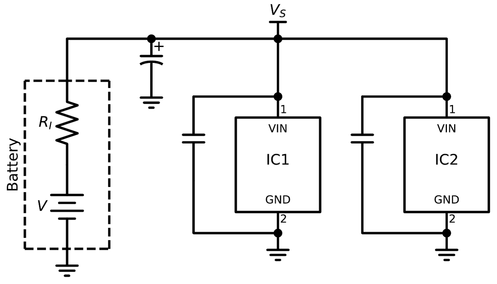
Switches, buttons and detecting a press
From a mechanical action to a voltage
A switch is a drawbridge in the wire: open, nothing crosses; closed, current flows. A switch stays where you leave it. A button is closed only while your finger is on it.
The microcontroller cannot feel a press, it can only measure voltage. So we build a small circuit where pressing the button changes a voltage.
- Switches and buttons mechanically open or close the circuit. A switch holds its open/closed state; a button is closed when pressed and open when released.
- Detection circuit: a resistor R from VS to the output, and the button from the output to ground.
- Not pushed: the circuit is open, there is no path to ground. No current through R, so no voltage drop: Vout = VS.
- Pushed: the circuit is closed. Current goes through R and the output is directly connected to ground: Vout = 0.
- The resistor here is a pull-up: it defines the output when the button is open, and it limits the current when the button is closed (otherwise pressing would short VS to ground).
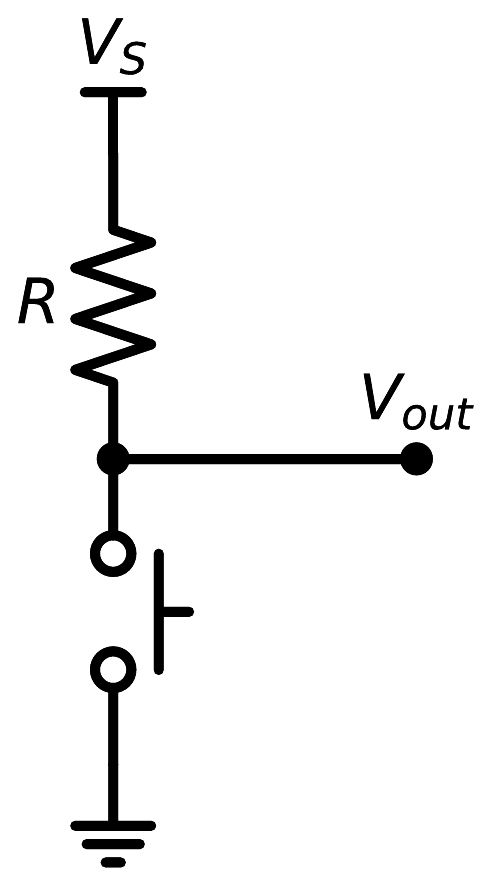
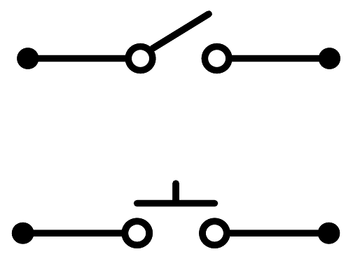
Transistor (MOSFET) as a switch
A switch operated by a voltage instead of a finger
A MOSFET is a tap whose handle is turned by electricity. A small voltage on one terminal (the gate) decides whether the path between the other two is wide open or shut.
That lets a weak signal from a chip switch a much stronger current on and off.
- A way of controlling a switch with an electric signal.
- MOSFETs are like electrically controlled resistors: the resistance between two terminals (drain D and source S) depends on the voltage at the third (gate G).
- Vin = VS: RDS very, very small, the switch is closed, current flows through RL, the load gets power.
- Vin = 0: RDS very, very big, the switch is open, no current flows through RL, the load gets no power.
- The slide's right-hand drawing shows the idea: the load RL and RDS form a voltage divider, and RDS is either negligible or enormous.
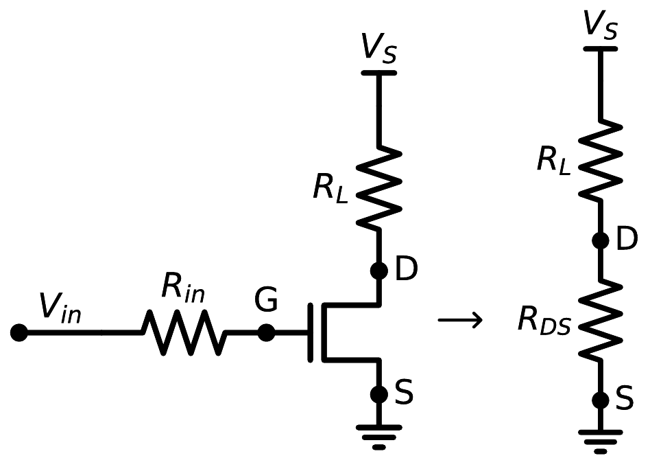
Diodes and LEDs
One-way streets for current
A diode is a one-way valve: current can go through in one direction and is blocked in the other. An LED is a diode that happens to glow when current passes.
The valve has almost no resistance when open, so something else must limit the flow. That is what the series resistor is for.
- A diode is a one-way conductor: ideally zero resistance in one direction and infinite resistance in the other.
- When current goes through, there is a voltage drop (the forward voltage VF) and the diode consumes power.
- LEDs are diodes that emit light.
- A series resistor is needed to limit the current through the LED to avoid damage:I = (Vsource - VF) / R
- Typical forward voltages: roughly 0.6 to 0.7 V for a silicon diode, around 2 V for a red LED and around 3 V for a blue or white one.
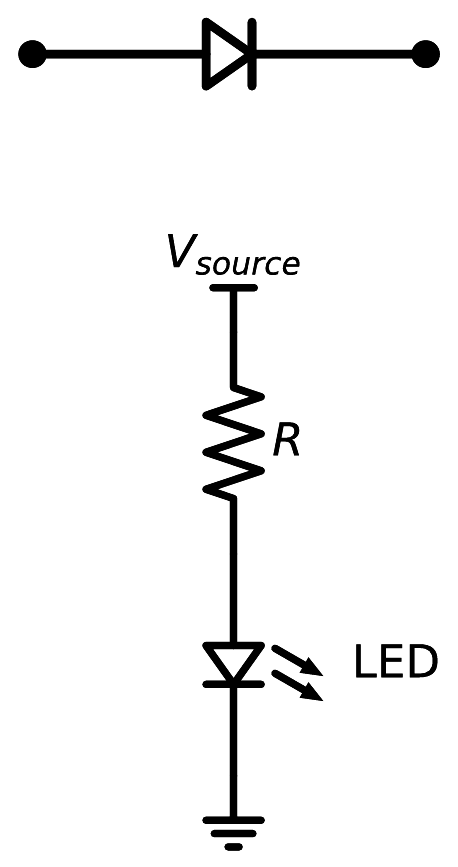
Reverse voltage protection
A diode as a bouncer at the power input
People insert batteries the wrong way round. Put a one-way valve in the supply line and a reversed battery simply cannot push current through: the device stays off instead of being destroyed.
- A diode in series with the supply protects the circuit from reverse voltage.
- Battery connected correctly: current flows as expected and the system is powered properly.
- Battery connected reversely: the diode blocks current flowing in the wrong direction, protecting the system from damage.
- The cost is the diode's forward drop in normal operation: a slightly lower supply voltage and P = VF · I of wasted power. Low-drop (Schottky) diodes are a common choice here.
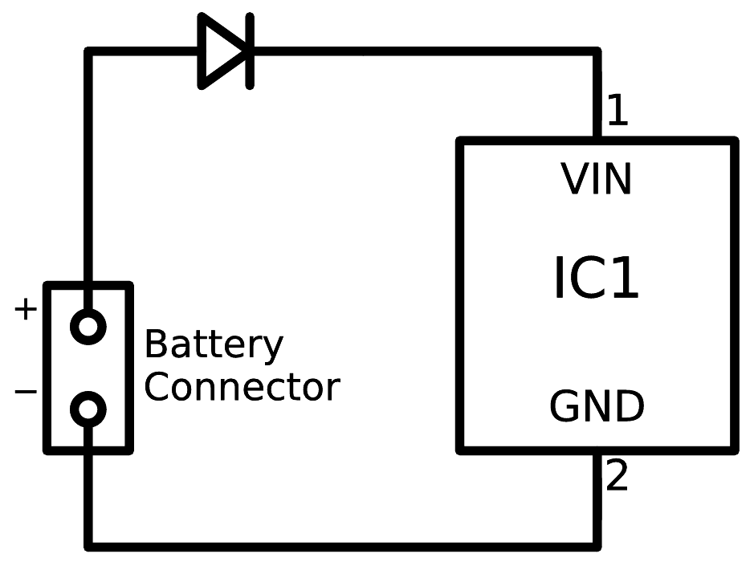
From prototype to printed circuit board
PCB prototyping
Try it cheaply before you build it properly
Before ordering a custom board, build a rough version you can change in seconds. A breadboard is like LEGO for circuits: push parts in, pull them out, no soldering.
- Before designing a PCB it is often a good idea to prototype the circuit, or some parts of it.
- Breadboard: solderless, rows of connected holes, ideal for quick experiments.
- Veroboard (stripboard): copper strips you solder to, for a more permanent prototype.
- Breakout boards allow easy access to the pins of small components: the tiny chip sits on a small PCB that brings its pins out to conveniently spaced pads.
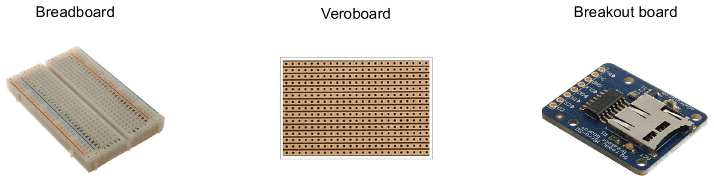
PCB design: the overall flow
Six stages and a feedback loop
A printed circuit board is the permanent home of a circuit: the wires are thin copper lines printed on a board, and the parts are soldered on top. Making one is a pipeline, and like software, you usually go around it more than once.
- A Printed Circuit Board (PCB) has copper tracks printed on a substrate and exposed copper pads to mount components.
- PCBs are designed with specialised software called Electronic Design Automation (EDA), or Electronic Computer-Aided Design (ECAD).
- The flow: schematic design → layout design → bill of materials (BOM) → manufacturing → assembly → testing.
- If testing finds errors, you go back to the stage that caused them. If everything is OK, the board is done.
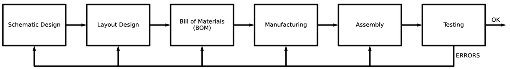
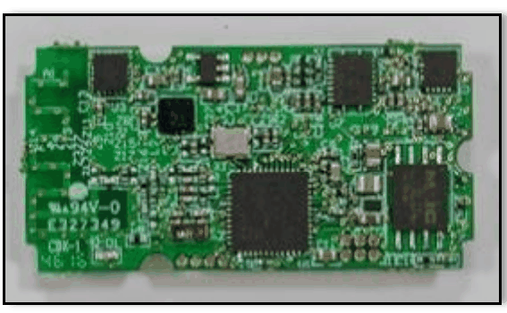
PCB design: schematic
Decide what is on the board and how it connects
First decide the main ingredients (which chips, which power source) and check they get along. Then, for every chip, draw a symbol whose pins match the datasheet. Most of the small supporting parts you can simply copy from the manufacturer's recipe.
- The first step is the identification of key components and the power source: ensure compatibility, identify the voltage level(s), and keep it simple.
- Often we do not have to select the values of passive components (resistors, capacitors): components provide reference circuits (e.g. "the decoupling capacitor should be 100 nF"), and there are many open hardware circuits to use as reference.
- For each component, make a schematic model based on the datasheet, matching pin numbers to functionality.
- The slide's example is the ADXL362 accelerometer: the package drawing on top becomes the schematic symbol below, with each numbered pin given its name (VS, GND, MOSI, MISO, SCLK, CS, INT1, INT2...).
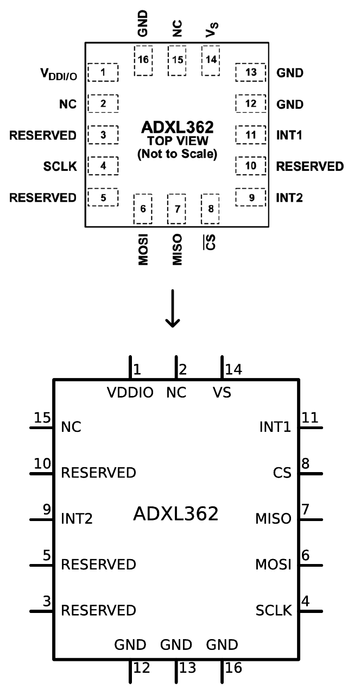
PCB design: component layout (footprints)
The exact copper pattern each part sits on
Each part needs a precisely shaped "parking space" of copper pads on the board: its footprint. If it is off by a fraction of a millimetre, or mirrored, the part cannot be soldered.
- For each component, create a footprint with exact dimensions, following the datasheet.
- Attention: the bottom view is the mirror image of the top view. Footprints are drawn looking down at the board.
- Passive components come in standard sizes.
- Imperial sizes (inches) and metric sizes (mm) are both used, and the codes look alike. For example the imperial "0603" (about 1.6 × 0.8 mm) is the metric "1608", while a metric "0603" is a far smaller part. Always check which system is meant.
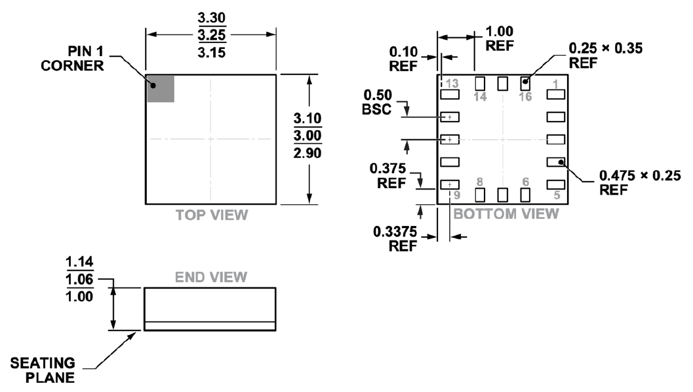
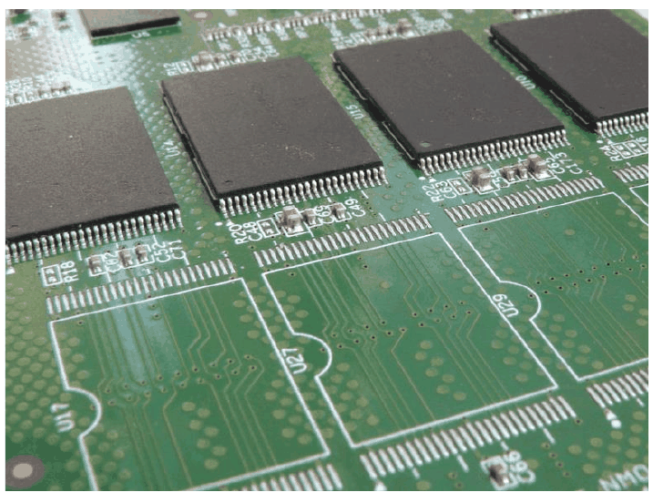
PCB design: board layout
Placing parts and routing copper
Now arrange the parts on the board and draw the copper "roads" between them. When roads need to cross, you use another floor: boards have several copper layers, connected by tiny plated holes called vias, like lifts between floors.
- Place components on a board and connect them (routing).
- PCBs have 2 or more copper layers. Components can be placed on the top and bottom layers; internal layers carry copper tracks for wiring.
- Vias connect layers vertically:
- 1. Through-hole via: top to bottom.
- 2. Blind via: top or bottom to an internal layer.
- 3. Buried via: internal to internal.
- Ground plane / layer: large copper areas connected to ground. They reduce noise and electromagnetic interference, and help with heat dissipation.
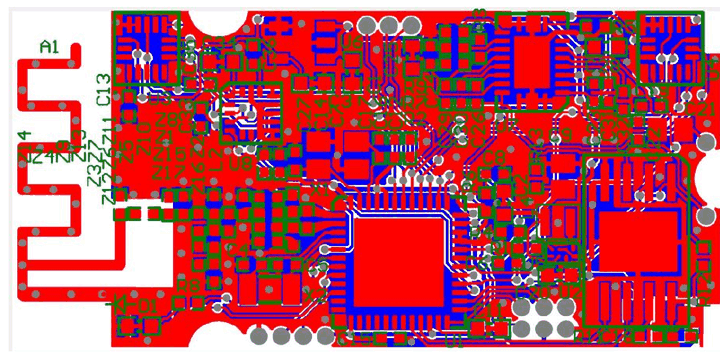
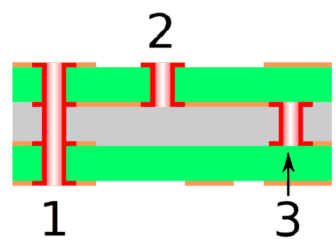
PCB design: BOM, manufacturing and assembly
Buying the parts and getting the board built
The BOM is the shopping list. Manufacturing makes the empty board. Assembly puts the parts on it and solders them. Both need big machines, so you normally send your files to a factory.
- Bill of Materials (BOM): a shopping list of components, typically a spreadsheet. It specifies manufacturer, supplier, price and so on, one line per designator (C1, C2, ...).
- Manufacturing: create the PCB itself.
- Assembly: place and solder the components on it, e.g. with a pick-and-place machine.
- These stages require machinery and often need to be outsourced to PCB fabrication manufacturers (fabs).
- Cost increases with precision requirements: the smaller, the costlier.
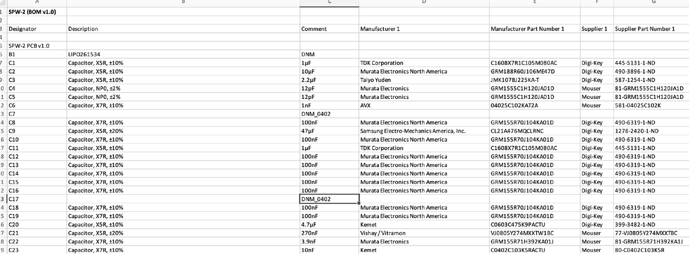
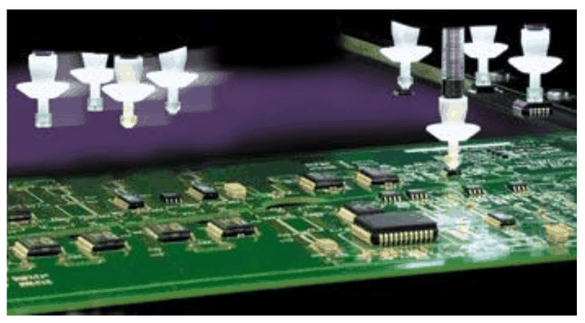
PCB design: testing
Hardware has bugs too
A board can be manufactured perfectly and still be wrong, because the design was wrong. Just like software, hardware needs testing, and often a "version 2".
- PCBs, like software, may have bugs. Hardware revisions may be required.
- PCB fabs typically test their products, but errors can also be in the design stages, which the fab does not check.
- Types of testing include: functional testing, performance testing (power measurement), signal quality testing, mechanical testing, thermal testing, specification verification and safety certification.
Electronic testing instruments
Multimeter
Three meters in one, for steady values
The multimeter is the tape measure of electronics: touch two points and read one number. It tells you a voltage, a current or a resistance, as long as that value holds still.
- A multimeter (digital multimeter, DMM) combines:
- Voltmeter: measures voltage, DC and/or AC.
- Ammeter: measures current, DC and/or AC.
- Ohmmeter: measures resistance, and beeps when the resistance is very low (continuity test).
- Other functions, depending on the model.
- It operates at specific ranges.
- It is ideal for measuring constant values.
- Practical note: voltage is measured across a component (meter in parallel), current through it (meter in series, the circuit must be opened).
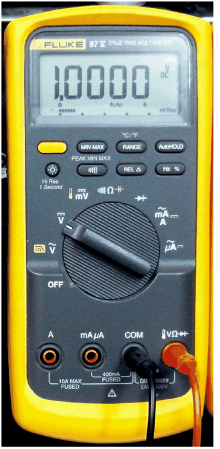
DC power supply
An adjustable, well-behaved battery for the bench
A bench supply is a battery with knobs: you choose the voltage, and you can set a maximum current so that a wiring mistake does not end in smoke.
- Provides DC electric power.
- The output voltage is typically configurable, at a specified resolution.
- Often comes with multiple individually configurable outputs.
- The output current can be limited to avoid accidental damage.
- Operates at specific ranges.
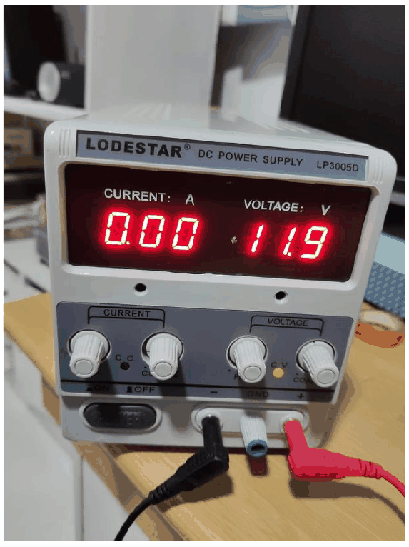
Oscilloscope
Seeing voltage change over time
A multimeter gives you one number. An oscilloscope gives you a movie: a graph of voltage against time, fast enough to see signals that change millions of times per second.
- Measures and displays voltage signals over time.
- Typically multiple voltage signals can be measured and displayed in parallel (channels).
- It is possible to set triggers for the measurements: a condition that tells the scope when to capture, so repeating or rare events give a stable picture.
- It can calculate statistics (min, max), frequency and time durations.
- The data can be extracted to a file.
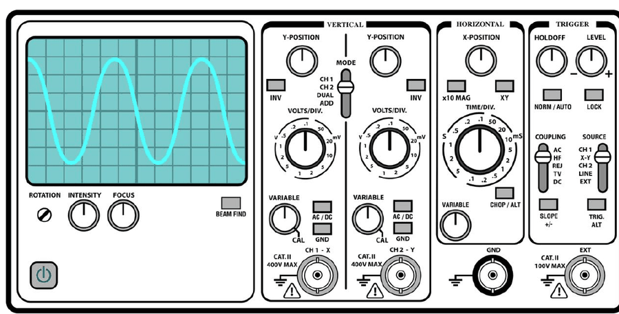
Logic analyser, spectrum analyser, generator, SMU
Four more tools and what each is for
Four more specialists. One watches many digital lines at once, one shows which frequencies a signal contains, one produces test signals, and one powers your device while measuring exactly what it consumes.
- Logic analyser: captures and displays multiple digital voltage signals.
- Spectrum analyser: measures the magnitude of an input signal over a frequency range (spectrum).
- Signal / function generator: generates signals such as sine waves, square waves, etc.
- Source Measurement Unit (SMU): supplies power and measures its voltage and current at the same time.
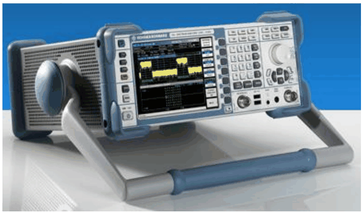
Cheat sheet
The formulas and rules worth memorising
Ohm's law
Also V = I · R and R = V / I.
Power and energy
For a resistor also P = I² · R = V² / R.
Battery life
Lower average current, longer life.
Series and parallel
Parallel: smaller than the smallest. A much larger parallel resistor can be ignored.
Voltage divider
Level shifter, potentiometer, thermistor sensor, button and MOSFET switch are all dividers.
Capacitor and RC filter
Blocks DC, passes AC. RC low-pass: high frequencies attenuated.
Battery under load
High current peaks can pull VS below the minimum operating voltage.
LED series resistor
The resistor limits the current; the LED drops VF.
Button with pull-up
The resistor defines the released level and limits the pressed current.
PCB flow
Errors loop back to the stage that caused them.
Figures cropped from the lecture slides "Practical Electronics for Embedded Systems" by Xenofon Fafoutis, DTU Compute, with their original sources noted. For personal study.